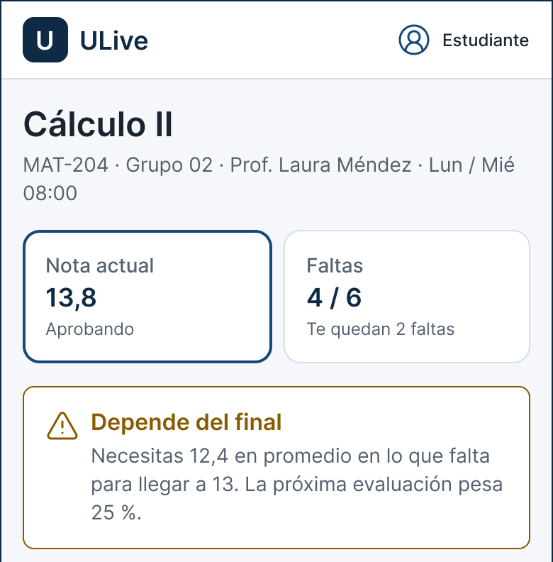

La nota que necesitas
Registra la fórmula de tu sílabo y ve cuánto necesitas en lo que falta, con el cálculo a la vista.
ULive aplica las reglas de tu universidad a tus cursos: te muestra la nota que necesitas en lo que falta, ordena tu semana según el peso de cada entrega y te dice cuántas faltas te quedan.
ULive aún no está disponible. Déjanos tu correo y te avisamos el día del lanzamiento.

83 %
de universitarios peruanos reportó estrés académico durante el semestre.
El exceso de tareas y el poco tiempo para entregarlas están entre las causas principales (Cassaretto et al., 2021).
Registra la fórmula de tu sílabo y ve cuánto necesitas en lo que falta, con el cálculo a la vista.
Cada entrega muestra su peso en la nota. Lo que más mueve tu promedio aparece primero.
Sabe cuántas faltas te quedan antes de decidir si faltas, con la regla de tu universidad.
Deja de rehacer tus cálculos en Excel cada vez que sale una nota.
Entiende la regla de tu universidad justo cuando una decisión depende de ella.
Decide si puedes faltar sin perder un curso y reacomoda tu semana cuando cambia tu turno.
Déjanos tu correo y te escribiremos una sola vez, el día del lanzamiento.
Revisa tu bandeja de entrada el día del lanzamiento. Puedes darte de baja desde el mismo correo.
No. Tus cursos y notas los registras tú y se guardan en tu celular.
Empezamos con universidades privadas de Lima. Al configurar la app eliges tu universidad y ULive aplica sus reglas de notas e inasistencias. Si tu curso usa una fórmula distinta, la registras tal como aparece en tu sílabo.
Todavía estamos definiendo el precio. Si te registras, serás de los primeros en saberlo.